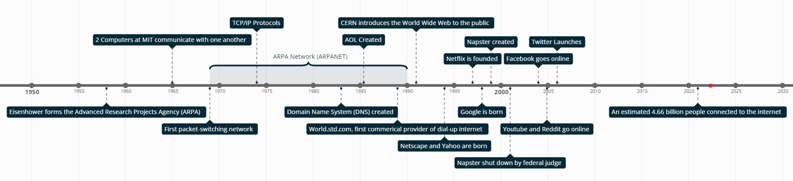

History
Table of Contents
Introduction
The origins and creation of the Internet are incredibly complicated. It is the culmination of many innovations from a variety of incredibly smart people. But as incredible these inventions may be, they really aren't important for the point of this website. My goal is to show the great effect the internet has had on American culture, and while knowing the timeline of the Internet is important for this, you don't need to know the specific details of how it came about. As such I will only be including a timeline from the creation of the internet to now, with some paragraphs on moments I feel are important such as AOL, and the purpose of the ARPANET.
Timeline
